MÜZİK DÜKKANIM
ANASAYFA
ÜRÜNLER
HAKKIMIZDA
ÜRÜNLER
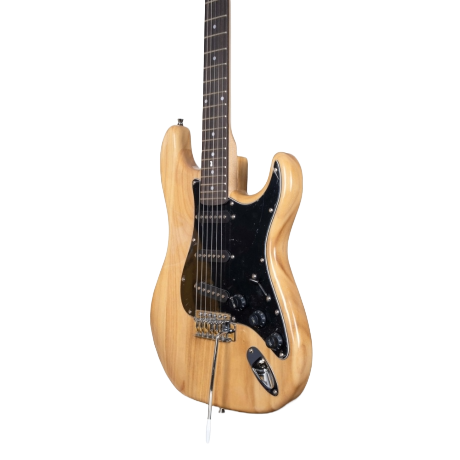
Fenix KG-01/NT Elektro Gitar (Natural)
3,061.00 ₺
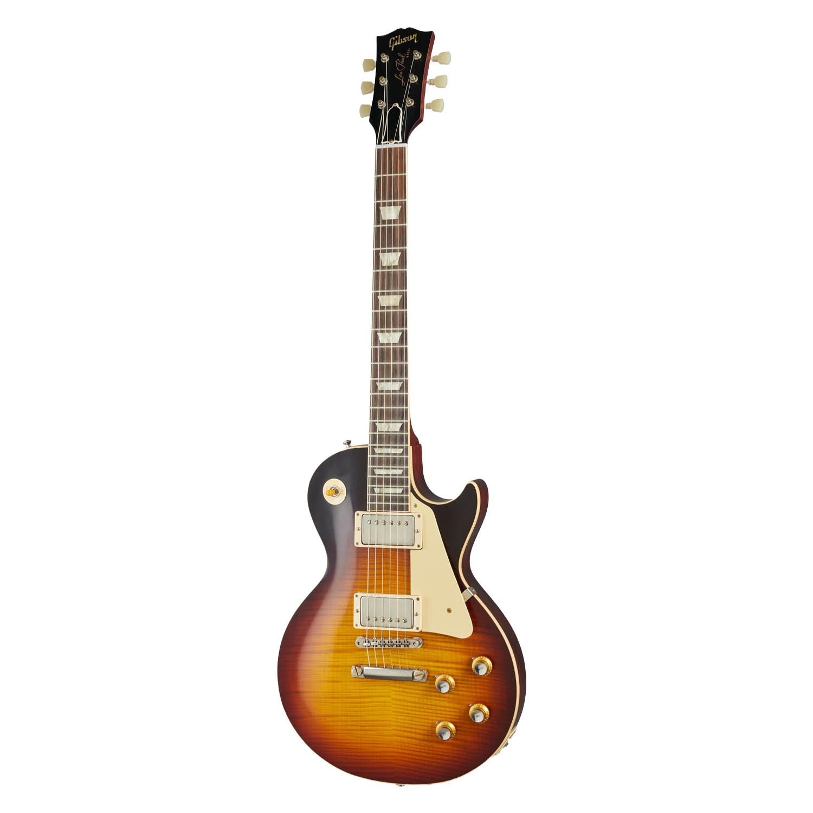
Les Paul Standard V3 VOS Elektro Gitar
208,278.00 ₺
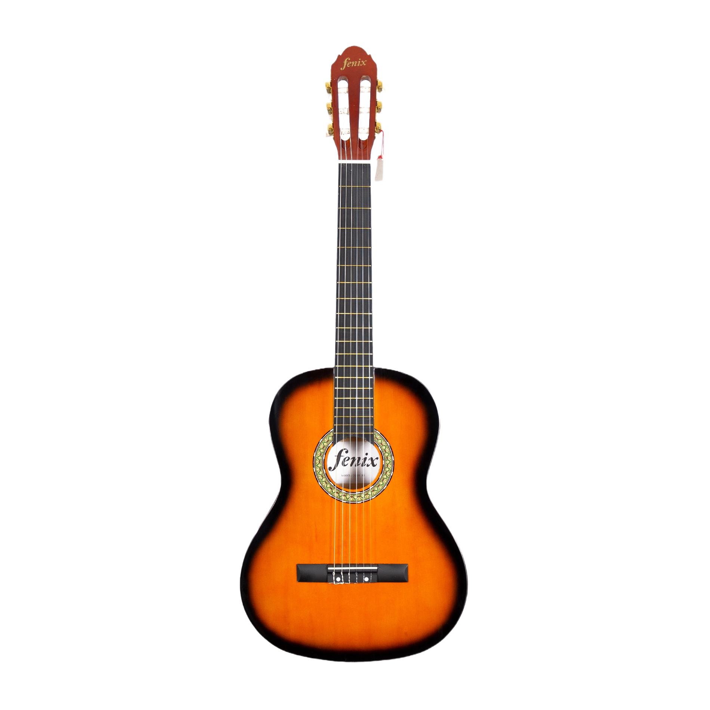
Fenix FX-CG811SB 3/4 Klasik Gitar (Sunburst)
1,367.00 ₺
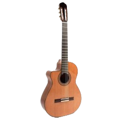
Raimundo 610 CEZ Solak Elektro Klasik Gitar
85,002.00 ₺
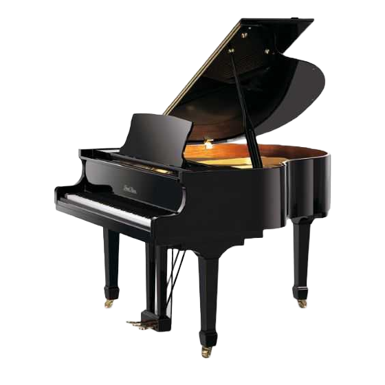
Pearl River GP148 Akustik Kuyruklu Piyano
206,647.00 ₺
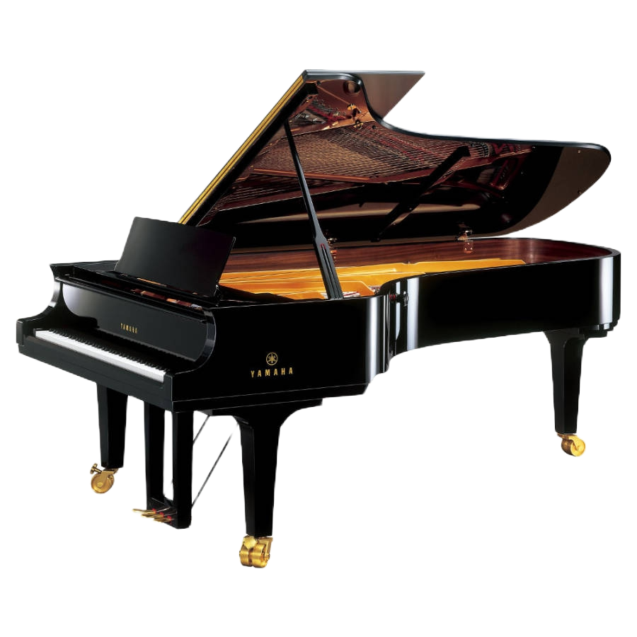
Yamaha CFX Akustik Tam Kuyruklu Piyano
3,882,321.00 ₺
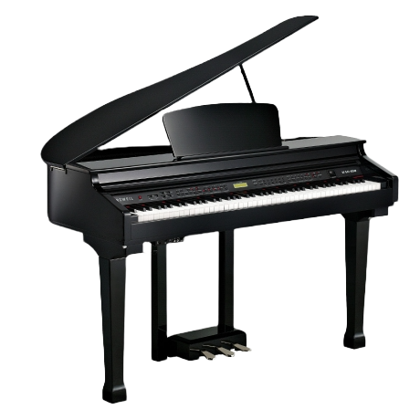
Kurzweil KAG100BP Dijital Kuyruklu Piyano
61,186.00 ₺
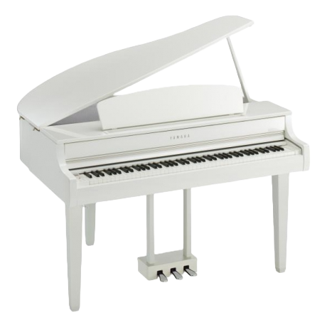
Yamaha CLP765GP Dijital Kuyruklu Piyano (Beyaz)
208,401.00 ₺
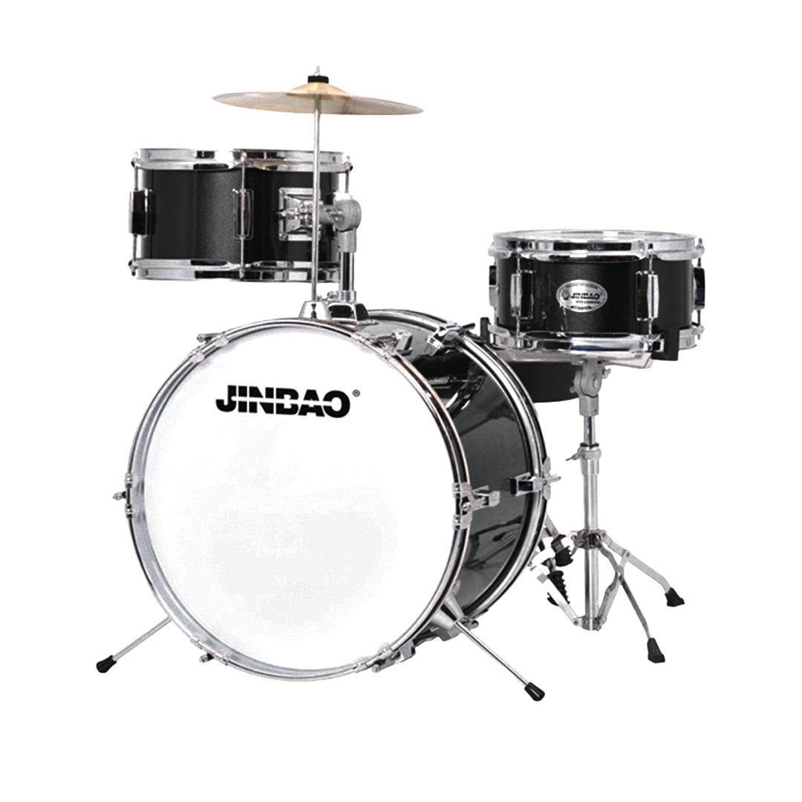
JINBAO 3 PARÇA JUNIOR DAVUL SETİ (SİYAH)
3,300.00 ₺
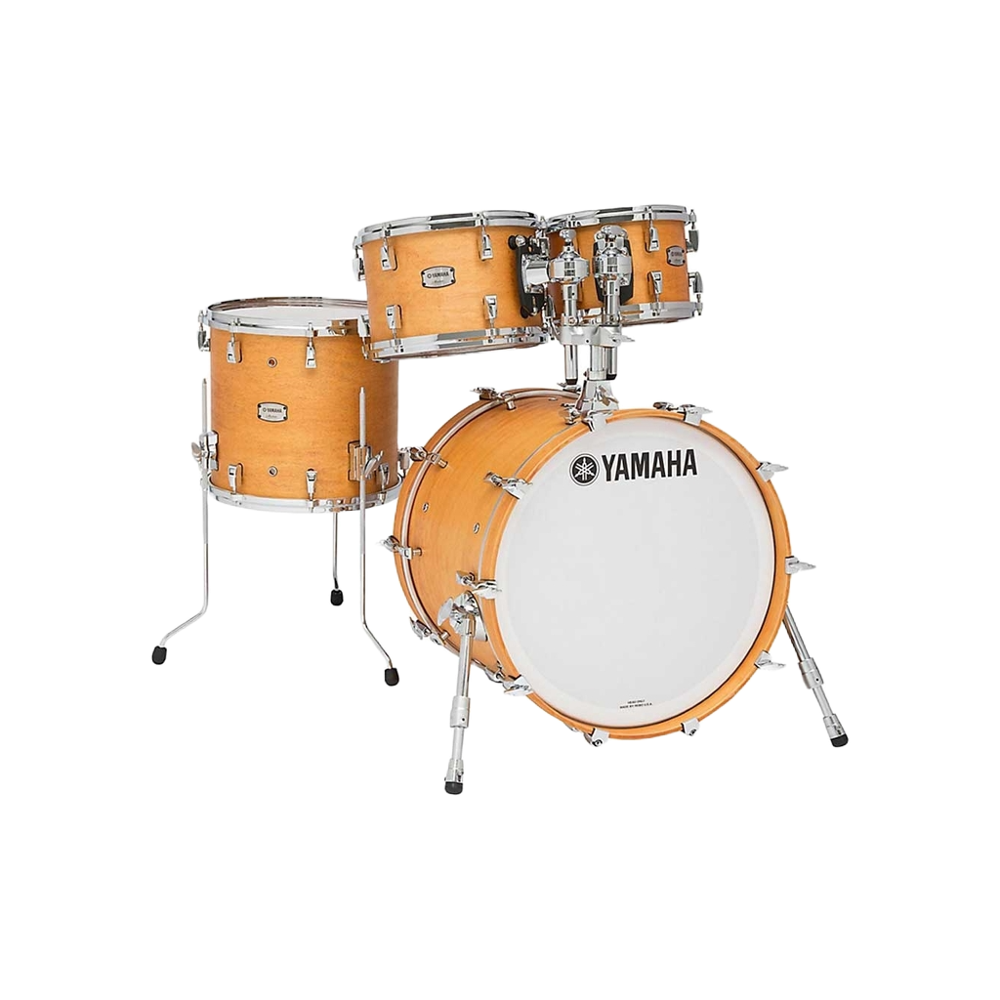
Yamaha Hybrid Maple Akustik Davul (Natural)
120,144.00 ₺
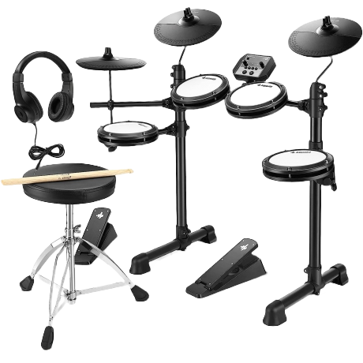
Donner DED-80 Elektro Davul
7,502.00 ₺
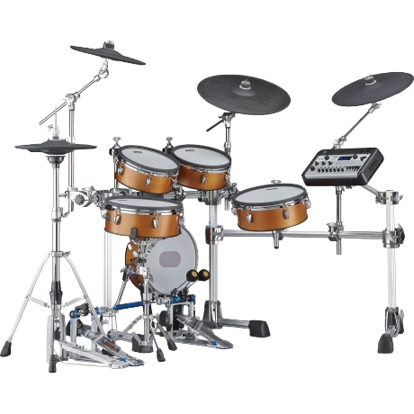
Yamaha DTX10KMRW Elektro Davul Seti
130,643.00 ₺
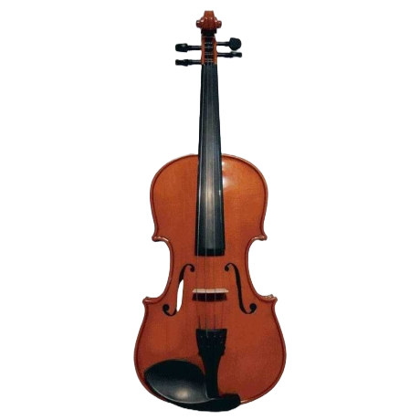
Mavis MV1410 Keman (4/4)
1,673.00 ₺
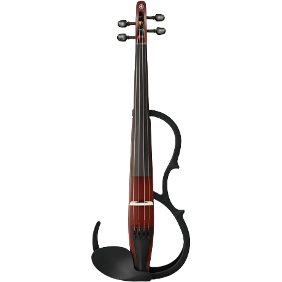
Yamaha YSV104BRO Keman
38,034.00 ₺